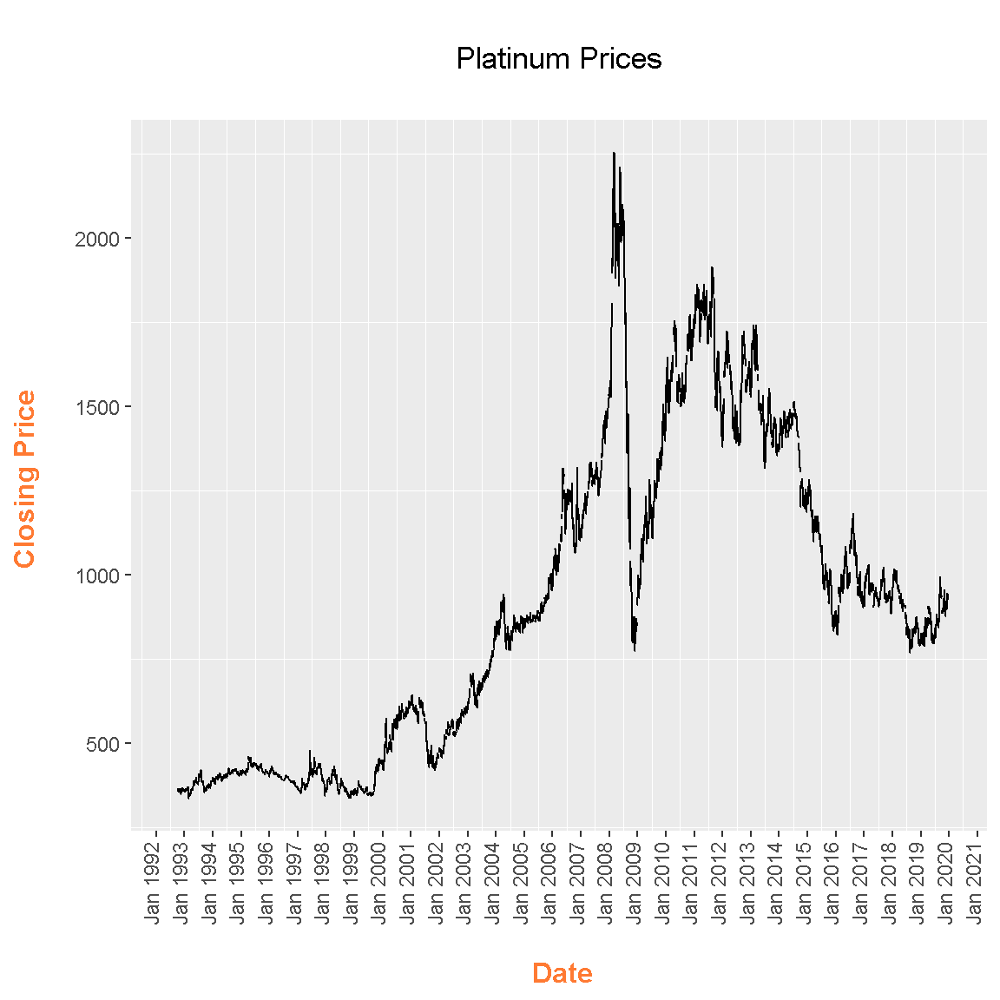
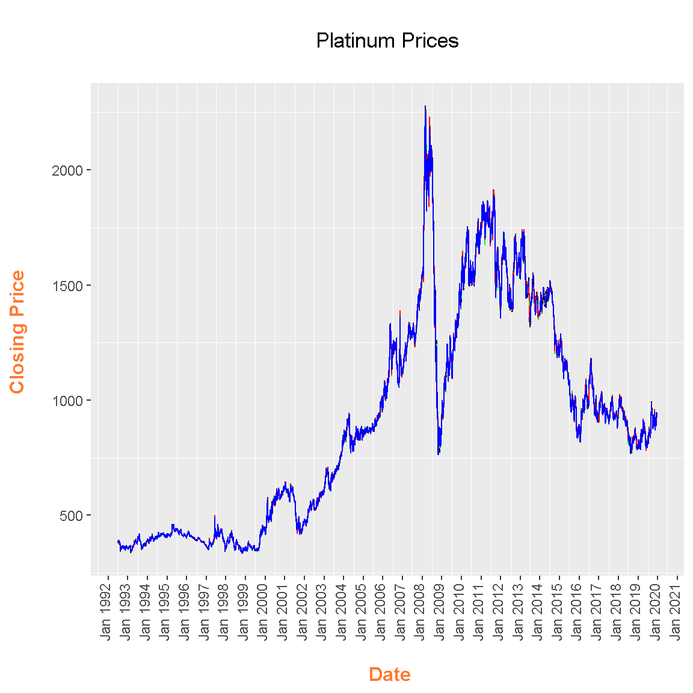

Using R & Quandl To Look At Financial Data
Hi there. This page is focused on using R with the Quandl package to look at financial data from the Quandl website.
There is this guide from the Quandl website from getting financial data directly into R. Youtube videos can supplement your learning and understanding with this topic.
You also need your own API key to access Quandl’s database. This can be acquired through signing in.
Installation
In R (or RStudio), install the Quandl package with install.packages("Quandl"). From the code below, I load in Quandl, ggplot2, plotly and dplyr.
# If you need to install Quandl:
# install.packages("Quandl")
# Loading Financial data With Quandl:
library(Quandl)## Loading required package: xts## Loading required package: zoo##
## Attaching package: 'zoo'## The following objects are masked from 'package:base':
##
## as.Date, as.Date.numeric##
## Attaching package: 'xts'## The following objects are masked from 'package:dplyr':
##
## first, last## The following objects are masked from 'package:data.table':
##
## first, lastlibrary(ggplot2)
library(plotly)##
## Attaching package: 'plotly'## The following object is masked from 'package:ggplot2':
##
## last_plot## The following object is masked from 'package:stats':
##
## filter## The following object is masked from 'package:graphics':
##
## layoutlibrary(dplyr)
# Helpful Youtube guide: https://www.youtube.com/watch?v=qg5alOoczNo
# https://www.quandl.com/tools/r
From the Quandl package, you need to tell R that you are using your Quandl API key for authorization. Think of the API key as a password. Quandl’s api_key() function takes in the API key code as the argument.
# Authorization (Set your own API key):
Quandl.api_key("api_key")
For this page, I use the datasets that are free. This link contains estimated median home prices according to Zillow.
To access the data, use the Quandl() function along with the page’s Quandl code (top right corner of page).

### Look at some data:
# Link: https://www.quandl.com/data/ZILLOW/C3821_ZHVITT-Zillow-Home-Value-Index-City-Zillow-Home-Value-Index-Top-Tier-Clarkson-NY
# 1)
clarkson_ny_prices <- Quandl("ZILLOW/C3821_ZHVITT")
# Preview data:
head(clarkson_ny_prices)## Date Value
## 1 2018-07-31 214000
## 2 2018-06-30 214200
## 3 2018-05-31 213800
## 4 2018-04-30 213000
## 5 2018-03-31 212800
## 6 2018-02-28 213500tail(clarkson_ny_prices)## Date Value
## 263 1996-09-30 129000
## 264 1996-08-31 129100
## 265 1996-07-31 129300
## 266 1996-06-30 129600
## 267 1996-05-31 129900
## 268 1996-04-30 130200# A simple plotly Plot:
plot_ly(data = clarkson_ny_prices, x = ~Date, y = ~Value) %>%
add_lines(y = clarkson_ny_prices$Value) %>%
layout(xaxis = list(title = "\n Date", titlefont = "Courier New, monospace"),
yaxis = list(title = "Price \n",
titlefont = "Courier New, monospace"),
title = "Zillow's Home Value Index For Clarkson, NY \n")
# 2) Platinum Prices From Johnson Matthey Database:
plat_prices <- Quandl("JOHNMATT/PLAT")
head(plat_prices)## Date Hong Kong 8:30 Hong Kong 14:00 London 09:00 New York 9:30
## 1 2018-08-28 810 810 813 NA
## 2 2018-08-27 795 796 NA 796
## 3 2018-08-24 780 785 791 791
## 4 2018-08-23 797 793 786 782
## 5 2018-08-22 802 798 794 797
## 6 2018-08-21 802 803 806 798tail(plat_prices)## Date Hong Kong 8:30 Hong Kong 14:00 London 09:00 New York 9:30
## 6714 1992-07-08 NA 385 385 385
## 6715 1992-07-07 NA 386 386 383
## 6716 1992-07-06 NA 385 385 388
## 6717 1992-07-03 NA 385 385 386
## 6718 1992-07-02 NA 386 386 389
## 6719 1992-07-01 NA 379 379 385# Rename columns:
colnames(plat_prices) <- c("Date", "HK_0830", "HK_1400", "LDN_0800", "NY_0930")
# ggplot Lines (Considering all prices/columns)
ggplot(plat_prices, aes(x = Date)) +
geom_line(aes(y = HK_0830), col = "black") +
scale_x_date(date_breaks = "1 year", date_labels = "%h %Y") +
labs(x = "\n Date", y = "Closing Price \n",
title = "\n Platinum Prices \n ") +
theme(plot.title = element_text(hjust = 0.5),
axis.title.x = element_text(face="bold", colour="#FF7A33", size = 12),
axis.title.y = element_text(face="bold", colour="#FF7A33", size = 12),
axis.text.x = element_text(angle = 90, vjust = 0.15, hjust = 1),
panel.grid.major = element_blank()) 
# ggplot Lines (Considering all prices/columns)
ggplot(plat_prices, aes(x = Date)) +
geom_line(aes(y = HK_0830), col = "black") +
geom_line(aes(y = HK_1400), col = "green") +
geom_line(aes(y = LDN_0800), col = "red") +
geom_line(aes(y = NY_0930), col = "blue") +
scale_x_date(date_breaks = "1 year", date_labels = "%h %Y") +
labs(x = "\n Date", y = "Closing Price \n",
title = "\n Platinum Prices \n ") +
theme(plot.title = element_text(hjust = 0.5),
axis.title.x = element_text(face="bold", colour="#FF7A33", size = 12),
axis.title.y = element_text(face="bold", colour="#FF7A33", size = 12),
axis.text.x = element_text(angle = 90, vjust = 0.15, hjust = 1),
panel.grid.major = element_blank())